FotoCollage
把 AI 装进拼贴,把修复变轻一点。
一款 AI 照片拼贴与修图 App — 以「季节换肤的首页」为情感锚点,串联文生图对话流、AI 换装 / 高清修复 / 智能擦除等创作闭环。
015 套季节主题日常 / 春 / 冬 / 情人节 / 圣诞028 宫格金刚区Editor · Template · DressUp …03双创作入口Collage / Freestyle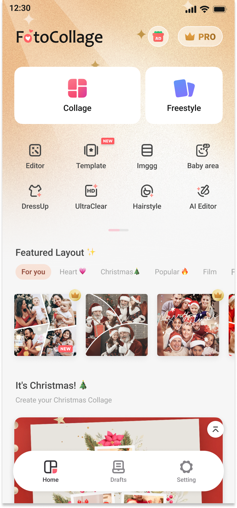
04AI 文生图对话Style 预设 · 灵感回填053 大 AI 工具换装 / 高清修复 / 擦除06积分订阅闭环Pro 金 · 撕票弹窗项目概览
FotoCollage 面向轻量修图与拼贴用户,把「工具」包装成「创作」——同一套首页骨架,通过背景层 + 装饰元素 + 节日运营位,即可在五套季节主题之间零成本切换。
整个档案围绕三条主线展开:降低创作门槛(首页固定入口、Ai Style 预设、灵感一键回填)、深浅主题分离(AI 工具沉入深色画布,情绪化页面用浅色渐变,组件变体独立维护)、不阻断商业转化(Pro 提示卡固定在决策终点而非开端)。
降低创作门槛
首页固定双入口 + Ai Style 风格预设 + 灵感一键回填,把"怎么开始"这个最大流失点直接焊死在首屏。
深浅主题分离
AI 工具页统一深色画布以保证沉浸;情绪化页面(修复 / 节日)用浅色渐变,两套组件变体独立维护互不污染。
不阻断商业化
Pro 提示卡固定在决策终点而非开端;积分耗尽给软提示与 Claim points 兜底,付费永远有退路。
设计系统
品牌红 #F55574 是唯一主行动色,Pro 权益用金色 #A87024 形成第二色域;AI 创作场景统一沉入深色画布 #121114,工具页与节日页面则使用浅色渐变,四个色域互不越界。
#FFFFFFCanvas卡片与内容底#FAFAFASurface次级容器#2B2B2BLine 700深色底描边#444444Gray 500分组背景#121114Ink 900AI 工具画布#1F1F1FInk 800深色面板#FF5A5FCoral 500品牌主色 · 行动点#F55574Coral 600主色深态#F87A6ECoral 400主色浅态#A87024Gold 700Pro 权益金728DFC→5945F4AI BluePro AI 订阅按钮#9747FFViolet 500组件库标注渐变承担氛围:暖金用于运营与节日,品牌红渐变是常态行动点,AI 工具深色渐隐用于大图上的文字兜底可读性。
字族以 Roboto 与 Inter 为主,运营大标题使用 Inter ExtraBold 加负字距;正文锁定 14–16px,辅助 12px,标签 10–11px,形成稳定的三档阅读节奏。
48Display L运营大标题 / 欢迎页32Display M模块主标题24Title L弹窗 / 详情页标题20Title M卡片主标题18Title S分组标题16Body L面板标题 / 按钮14Body M正文 / 列表项12Caption辅助说明 / Tab10MicroPro 角标 / 标签8–12px 是高频主力(按钮、输入、卡片),19–22px 用于手机设备画板,弹层胶囊 24–28px,Pro 主按钮 55px 胶囊强化仪式感;阴影强调暗色环境下的悬停可点击性。
Radius
2pxhairline / 分割8px控件默认12px卡片19px手机画板24px弹层55px主行动胶囊Elevation
0 1 2 / 6%hairline · 内嵌元素0 4 4 / 25%card · 设备阴影0 8 18 / 35%overlay · 浮层0 22 46 -22 / 95%popover · 弹窗模块索引
十六个功能簇的完整目录。悬停任意条目可预览对应界面,点击跳转到该模块的完整展示。
界面全览
按功能簇组织的全部高保真界面。点击任意界面可查看大图。
首页主题优化
同一套首页骨架,在 5 种主题间切换:日常(暖金渐变) / 春(青蓝渐变) / 冬(冰蓝夜空) / 情人节(粉) / 圣诞节(雪花 + 专题模板运营位)。设计变更仅替换背景层与装饰元素,组件库零改动。
- 双入口固定于顶部:Collage 自由拼 / Freestyle 创作
- 8 宫格金刚区固定功能位,节日期间只换装饰不换布局
- Featured Layout 模板流用真实样例图片,降低决策成本
- 节日运营位挂底部,不打断主浏览动线
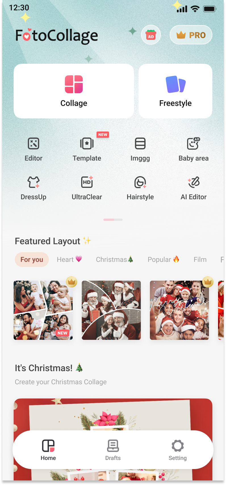
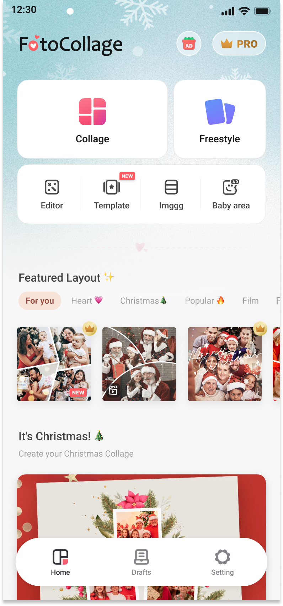
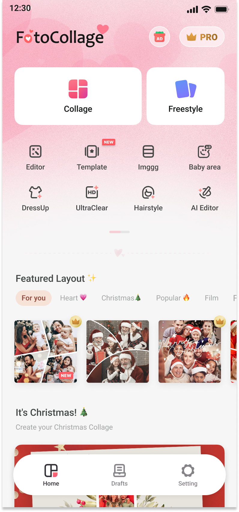
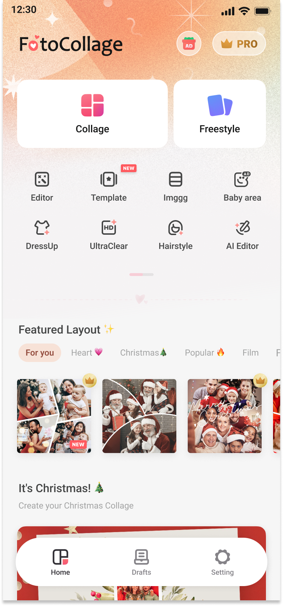
草稿箱
Drafts / Ai Works 双 Tab 承载草稿箱:双列瀑布流按日期倒序,每张卡片带更多操作入口;Ai Works 单独管理 AI 生成作品;空状态提供插画与主行动按钮。
- Drafts / Ai Works 双 Tab 切换,分别管理拼贴草稿与 AI 作品
- 瀑布流而非等高栅格,适配不同尺寸的拼贴草稿
- 长按卡片弹出"更多操作"菜单(编辑 / 复制 / 删除)
- 空态插画 + 主行动按钮:"创建你的第一张拼贴"
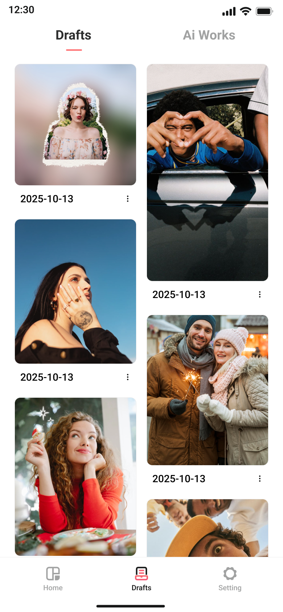
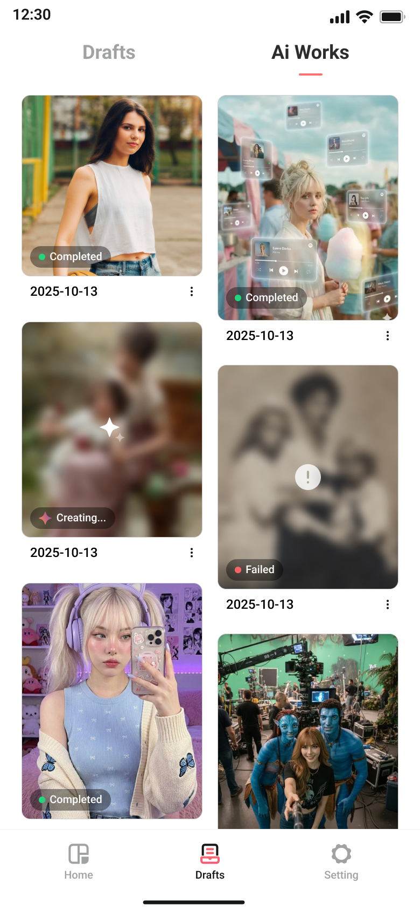
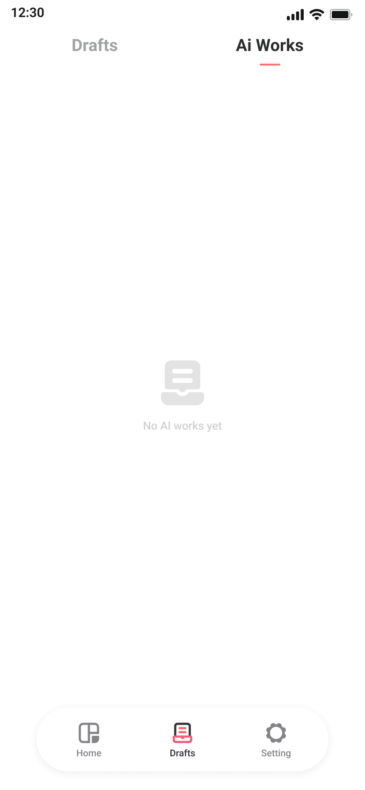
设置
设置页承载双重身份:顶部 FotoCollage Pro 权益卡分两态——已订阅态用金色渐变卡展示会员权益,试用态以"7-Day Free trial"角标引导转化;下方分组列表覆盖偏好与社区入口。
- 权益卡用品牌金渐变 + 拟物阴影,占据首屏视觉焦点
- 分组列表使用彩色应用图标,提升整页识别度
- App Icon 玩法支持圣诞 / 春节限定皮肤
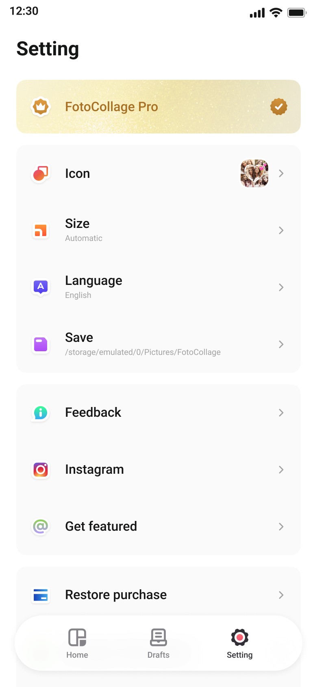
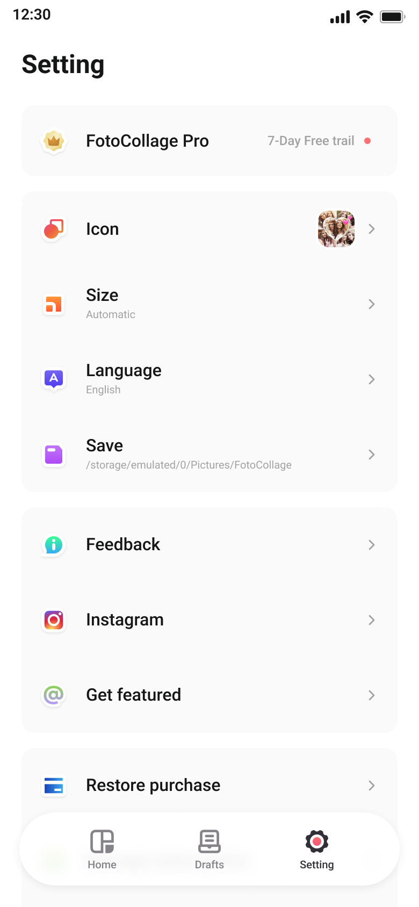
角标与按钮
Pro 角标是产品里最高频的"转化触发器",围绕它沉淀 5 种变体:常规 Pro / 气泡 Pro / Free Trial 撕票 / 终身会员 / 节日限定,统一金色渐变 + 透明白描边规范。
- 常规 Pro 角标 17px 圆角,小尺寸内嵌图标空间充足
- 气泡 Pro 角标带尾巴,用于 IM 卡片头部
- 撕票 Free Trial 84×24,虚线 + 撕痕模拟
- 按钮 = Pro 主体(蓝紫 120×50) + Pro 解锁(金色 160×50)
订阅弹窗
围绕"不打断商业化"的克制原则,4 种订阅弹窗变体:Holiday Sale 30% OFF 撕票 / 7-Day Free Trial 双套餐 / 2026 元旦限定 / 订阅对比表;合规细则始终在底栏完整呈现。
- 撕票样式虚线分割 + 折扣百分比,节日运营复用率最高
- 双套餐(年付 / 月付)胶囊 Tab,选中态主色描边
- 底部细则固定 Restore / Terms / Privacy
积分体系
积分是 AI 工具的计量单位。点数消耗页用时间线呈现,领取积分弹窗(单卡 / 双卡对比)作为运营活动载体,订阅入口深度联动。
- 点数消耗时间线:日 / 月分组,支持左右切换月份
- 领取积分弹窗 1 卡 / 2 卡版本,Daily Check-in 任务体系
- 点数耗尽时软提示订阅,不阻断不骚扰
登录流程
Google OAuth 登录由 App 内 WebView 承载,覆盖完整分支:欢迎页 → 协议勾选 → 账号选择 → 头像确认 → 登录成功,并含账号绑定 / 解绑 / Pro+AI 升级态。
- 协议勾选页强制勾选 Privacy & Terms 才能继续
- 账号选择页与 Google 全局登录打通,WebView 内体验
- 成功落地页附 Pro+ai 升级引导,转化节点
- 异常态(网络失败 / 取消授权)提供重试,不静默失败
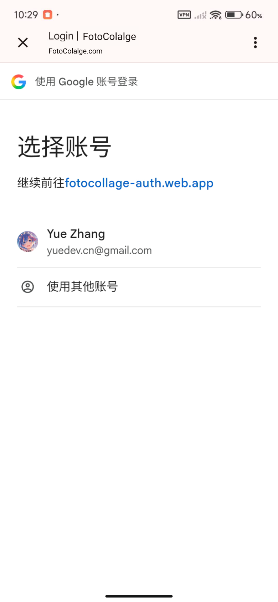
AI Chat · 文生图
文生图对话流核心 7 屏:灵感无图 → 选中 Style → 生成中 → 生成成功 → 点击灵感 → 选中换装 → 选中发型。整个链路在深色画布上进行,沉浸式聚焦图片内容。
- 顶栏展示更多灵感案例,用户始终有下一动作可选
- Ai Style 面板呈现风格参考图,参数区(4K / 3:4 / 积分)与键盘一体化
- 生成中态进度环渐隐到深夜画布;失败保留"再试一次"
- 键盘收起 / 展开态独立设计,避免误触
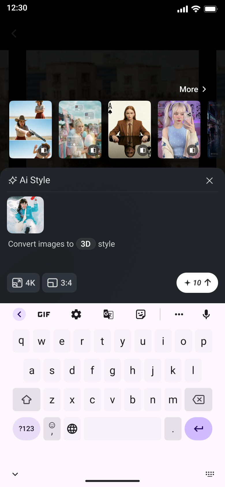
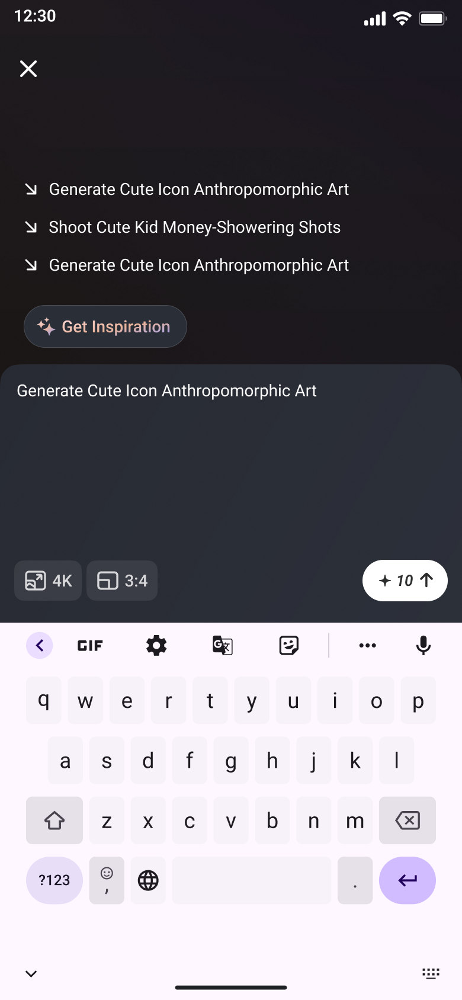
灵感生成状态
完整覆盖文生图 / 灵感生成的 4 种状态:未生成 / 生成中(渐显加载) / 出错误(降级重试) / 应用后重置,状态切换有清晰视觉过渡(暗化 → 显亮)。
- 未生成态:大图 + 提示文案 + Generate 主按钮
- 生成中态:渐变蒙版 + 进度环 + 积分预估
- 错误态:原图保留 + 错误插画 + 重试入口
- 应用后重置:toast 提示 + 列表回到首屏
高清修复
老照片 Before / After 对比呈现;双模式切换(Photo Restore 默认 / Ultra HD 增强);底部深色主按钮 + 积分标识;粉色渐变背景柔化修复场景的情感体验。
- 浅色 + 暖白渐变是全 App 唯一一处怀旧氛围
- Tab 切换普通 / 超清,二次进入默认上次选项
- 积分消耗透明化 + Claim points 引导
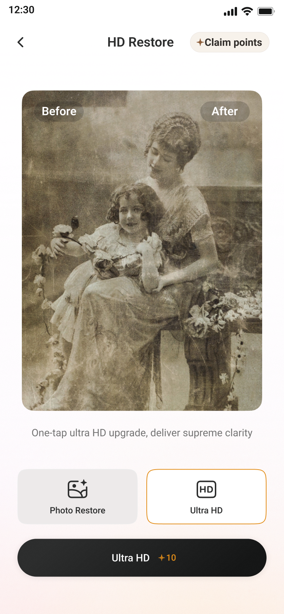
AI 换装
上传照片 → 选择服装九宫格 → 一键换装。选中态以红色对勾标记;Start Outfit Change 按钮明示积分消耗 +10;右上角 Claim points 引导积分获取。
- 服装九宫格 8 张可选 + 1 张 UPLOAD 自定义
- 选中态除对勾外,主图轻微缩放反馈
- 顶栏保留"换发型"入口,组合工具
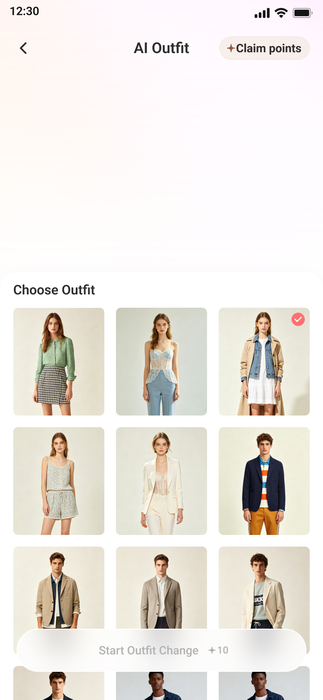
智能擦除
全屏图片画布 + 圆形画笔光标;底部画笔 / 橡皮擦切换与笔刷大小滑杆;深色工具界面聚焦图片内容本身;顶部积分余额常显,消耗透明化。
- 画笔光标跟随手指,圆形遮罩预览擦除范围
- 工具栏三件套:画笔 / 橡皮 / 撤销;长按滑杆调直径
- 深色画布压暗周边,避免误判触发区域
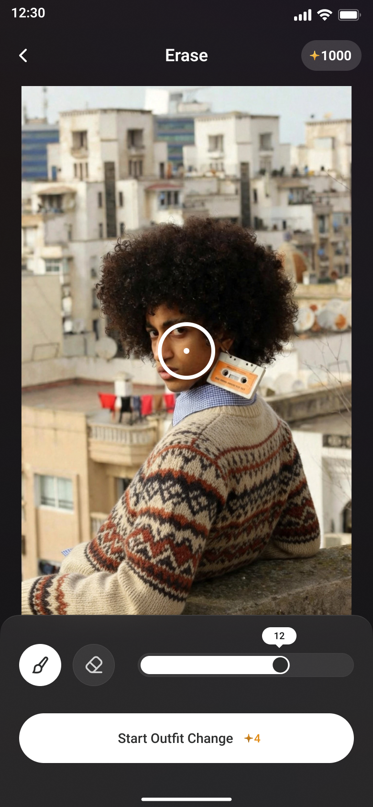
状态设计
围绕"不打断"原则,所有页面输出默认 / 加载 / 错误 / 空 / 转化五类核心状态;主行动点在不同状态间从禁用转为可点击,按钮始终存在。切换场景查看对应矩阵:
 已订阅到期
已订阅到期总结
把每次设计决策,
都缩到一个明确的原则里。
FotoCollage 的设计语言围绕三条主线组织 —— 降低创作门槛(首页固定入口 + Style 预设 + 灵感一键回填)、深浅主题分离(AI 工具用深色画布,情绪化页面用浅色渐变)、不阻断商业化(Pro 提示卡固定在决策终点而非开端)。希望这份归档能为后续接手的设计师提供完整的可复用上下文。
- 画板
- 390 × 844
- 色板
- 12 主色 · 8 渐变
- 形状
- 6 圆角 · 4 阴影阶
- 组件
- 30+ 设置图标变体
- 主题
- 深浅双轨 · 5 季节换肤
- 转化
- 4 种订阅弹窗规范